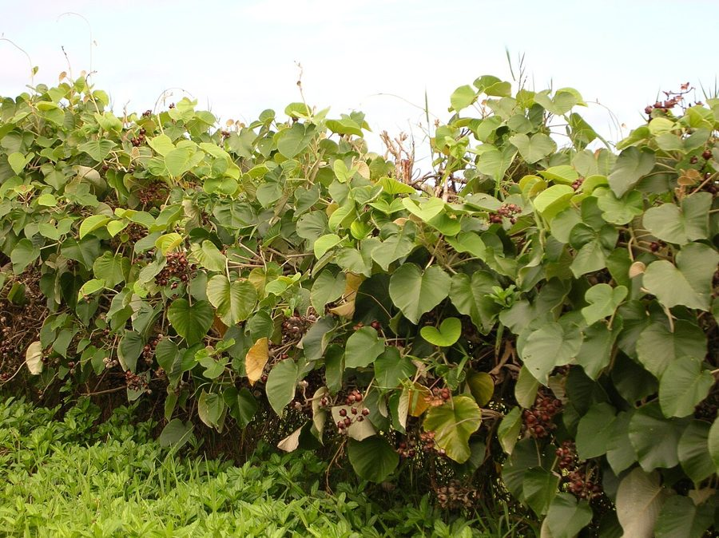

समुद्रसोखElephant Creeper
Argyreia nervosa · Convolvulaceae · FLR-0266

- Scientific name वैज्ञानिक नाम
- Argyreia nervosa (Burm. f.) Bojer
- Family कुल
- Convolvulaceae
- Hindi हिंदी
- समुद्रसोख
- Local names स्थानीय नाम
- samudrasokh, samundar sokh, elephant creeper, argyreia
- Status here यहाँ की स्थिति
- native
- Movement आवागमन
- Resident, here all year
- Known from कहाँ दर्ज
- Others have published records from the wider Awadh–Purvanchal plain, none yet from Basti–Ayodhya अवध–पूर्वांचल से दूसरों के प्रकाशित अभिलेख, बस्ती–अयोध्या से अभी नहीं
- IUCN IUCN
- not evaluated
- Review समीक्षा
- audited and independently read
When to look कब देखें
Expected mainly in April, May, June, July, August, September, October, November. मुख्यतः अप्रैल, मई, जून, जुलाई, अगस्त, सितंबर, अक्टूबर, नवंबर में अपेक्षित।
Uses and possibilities उपयोग और संभावनाएँ
“Traditional medicine” means a documented traditional use, not a claim that it works. Nothing on this page is medical advice.
Drawn from the documented uses in the profile below, where each is labelled traditional, current or a research lead. All uses →
Tell it apart from इनसे अलग पहचानें
समुद्रसोख / Elephant Creeper
Argyreia nervosa (Burm. f.) Bojer — Convolvulaceae
समुद्रसोख — एक शक्तिशाली बेल जो पेड़ों और झाड़ियों के ऊपर चढ़ता है। विशाल, हृदय के आकार की पत्तियाँ, जो नीचे की ओर रुई जैसी सफेद — इसीलिए नाम समुद्रसोख (समुद्र का सोख, या समुद्र से आई बेल)। गर्मी-बरसात में बड़े, सुंदर बैंगनी-गुलाबी फूल खिलते हैं, जो भोर में खुलते हैं। बेल बहुत जोरदार है, बड़ी झाड़ियों को ढक लेती है।
Quick Identification त्वरित पहचान
| Feature | Description |
|---|---|
| Vine | Vigorous, woody-based climber, twining, up to 5–10 m |
| Leaves | Very large, 15–30 cm, cordate (heart-shaped), velvety, distinctive silvery-grey tomentum (fine hairs) on underside |
| Tendrils | Twining petioles; no tendrils but the stem winds around support |
| Flowers | Large, 4–6 cm, pink to purple, funnel-shaped, opening at dawn |
| Fruit | Globose capsule, 1–1.5 cm, brown; splits to release seeds |
Field tip: A vigorous climbing vine with massive heart-shaped leaves that are densely hairy (woolly) on the underside — the silvery-white tomentum is diagnostic. Large pink-purple morning-glory flowers open at dawn. Look for it climbing trees and shrubs in open woodland and gardens.
हिंदी — कैसे पहचानें: बहुत बड़ी दिल जैसी पत्तियाँ, नीचे की ओर सफेद-रुई जैसी। बड़े, गुलाबी-बैंगनी फूल सुबह खिलते हैं।
Morphology आकारिकी
Biometrics (cultivated and wild vines, South and Southeast Asia):
| Measurement | Range |
|---|---|
| Vine length | 5–10 m |
| Leaf length | 15–30 cm |
| Leaf width | 12–25 cm |
| Flower diameter | 4–6 cm |
| Fruit diameter | 1.0–1.5 cm |
| Stem diameter | 0.8–2 cm |
Stem: Twining, initially herbaceous, becoming woody at the base. The stem is covered with fine hairs when young, becoming glabrous with age. The plant twines by winding its stem around supports.
Leaves: Alternate, simple, cordate (heart-shaped), 15–30 cm long, 12–25 cm wide. The upper surface is dark green with prominent veining; the underside is covered with a distinctive, dense, silvery-white or pale grey tomentum (fine velvety hairs). Petioles are long (5–15 cm) and twining, serving as the climbing mechanism.
Flowers: Large, 4–6 cm diameter, funnel-shaped (rotate-funnel form), pink, mauve, or purple with a lighter throat. Opening at dawn (hence "morning glory"), closing by midday. The flowers are borne in lax axillary cymes. Flowering is prolific June to October.
Fruit: A globose capsule, 1–1.5 cm diameter, thin-walled, containing 1–4 seeds.
हिंदी: विशाल दिल-आकार की पत्तियाँ, नीचे रुई जैसी सफेद रेशे। तने पर पत्तियों का डंठल लिपटा हुआ चढ़ता है। बड़े गुलाबी-बैंगनी फूल।
Behaviour & Ecology व्यवहार और पारिस्थितिकी
Elephant creeper is a vigorous climbing vine native to the Indian subcontinent and Southeast Asia. It is a warm-season climber that uses its twining petioles to scramble up trees and shrubs. The plant grows rapidly and can quickly cover a large area, sometimes to the point of smothering the host plant. It is tolerant of poor soils and semi-arid conditions and is both cultivated as an ornamental and occurs as a naturalized weed in disturbed areas.
The large flowers are visited by morning-active insects, particularly bees and butterflies, and by hummingbirds in regions where they occur. The seeds are dispersed by gravity and water.
हिंदी: गर्मी का पौधा। जल्दी बढ़ता है, बड़ी झाड़ियों को ढक देता है। खराब जमीन पर भी लगता है। सुबह सुबह कीट और पक्षी फूल से रस लेते हैं।
Life Cycle / Phenology जीवन चक्र
| Month / season | Event |
|---|---|
| March–April | New growth from base; leaf emergence |
| April–May | Rapid vine elongation; covering support structures |
| May–June | Flowering begins |
| June–October | Peak flowering and fruiting |
| October–November | Seed maturation and dispersal; plant decline |
| November–March | Winter dormancy; shoots die back to the base |
Seeds germinate readily after rains or with warm soil. Growth is rapid; a well-established plant can produce flowers within 8–10 weeks of emergence. Lifespan typically 2–3 years from seed, though the root system may persist.
हिंदी: जून-अक्टूबर में फूल और फल। बीज बरसात में अंकुरित होते हैं। सर्दियों में मर जाता है।
Associated Species / Interactions संबंधित प्रजातियाँ
- Pollinators: Morning-active bees, butterflies, and other insects visit the flowers.
- Host plants: Climbs on Neem, Mango, Peepal, and other village trees.
- Garden companions: Often grown in ornamental gardens alongside Blue Morning Glory and other climbing plants.
Pests and Diseases कीट और रोग
- Leaf spots in humid weather; rarely serious.
- Seed beetles occasionally; damage minimal.
- Root rot in waterlogged soils.
Agricultural / Human Relevance कृषि प्रासंगिकता
Ornamental: The elephant creeper is cultivated as an ornamental climbing plant for its large heart-shaped leaves and showy pink-purple flowers. It is grown on trellises, pergolas, and walls in gardens throughout eastern UP.
Traditional uses: In Ayurvedic and traditional medicine systems, the root and leaves of Argyreia species are used in formulations, though specific uses are not well-documented for A. nervosa in eastern UP. No current medicinal use is documented in the region.
Weed potential: The plant self-seeds readily and can become invasive in disturbed areas and abandoned gardens, where it grows unchecked and may smother other plants.
हिंदी: सुंदर बेल, बगीचों में लगती है। बीज से अपने आप भी लग जाती है। पुरानी जगहों पर घास मान लेती है।
Expected Locally स्थानीय रूप से अपेक्षित
Not a field record. Written from published accounts for eastern Uttar Pradesh. No confirmed local sighting yet — if you have seen it, that is what the atlas needs.
अभी तक स्थानीय पुष्टि नहीं। यह विवरण प्रकाशित स्रोतों से है, किसी अवलोकन से नहीं।
Expected as a cultivated ornamental in gardens and on village boundaries throughout eastern UP, visible from April to November. The distinctive large heart-shaped leaves with silvery-white underside and the pink-purple flowers make it recognizable. A first local record would be a photograph with location and date.
Distribution वितरण
Global range: Native to the Indian subcontinent and Southeast Asia; cultivated in tropical and subtropical regions.
In India: Widely cultivated and naturalized throughout tropical and subtropical India, from the Himalayas to the peninsula.
In Uttar Pradesh: Cultivated as an ornamental throughout the state.
In Basti district / eastern UP: Expected as a cultivated ornamental in gardens and hedges throughout the districts.
Research Questions शोध प्रश्न
Anyone can investigate these | कोई भी इन प्रश्नों की जाँच कर सकता है
- How quickly does a seedling of elephant creeper grow, and how long before it produces flowers? — Plant seeds and track growth weekly.
- What insects visit the flowers in the early morning, and how long do the flowers remain open? — Early morning observation; time flower opening and closing.
- Can seeds be saved from mature fruits, and what is the germination rate? — Collect fruits; extract seeds; test germination.
- Does the silvery underside of the leaves repel water, and does this protect the plant from fungal infection? — Water droplet test; compare leaf health to other vines.
- In how many villages is elephant creeper cultivated as an ornamental, and are there local names besides samudrasokh? — Village survey.
Similar Species मिलती-जुलती प्रजातियाँ
| Species | How to tell apart | हिंदी |
|---|---|---|
| Blue Morning Glory (Ipomoea indica) | Smaller leaves; flowers blue, opening all day; less silvery tomentum | पत्तियाँ छोटी, फूल नीले, दिन भर खिले |
| Utran (Operculina turpethum) | Smaller leaves; yellow flowers; different family (Convolvulaceae); thinner stems | पत्तियाँ छोटी, पीले फूल |
| gilt creeper (Luffa sp.) | Leaves deeply lobed; fruits large and spiky; different family | पत्तियाँ कटी-फटी, फल बड़े |
Field rule: A vigorous climbing vine with very large heart-shaped leaves that are distinctly silvery-hairy (woolly) on the underside and bearing large pink-purple dawn-opening flowers is elephant creeper.
Taxonomy & Classification वर्गीकरण
Original description. First described by Johannes Burman filius in 1768 and later revised by Michael Bojer as Argyreia nervosa. The specific epithet nervosa refers to the prominent veining of the leaves.
Subspecies. Monotypic — no subspecies are currently recognised.
Family and order placement. Convolvulaceae, the morning glory family, order Solanales. The genus Argyreia comprises about 100 species, mostly in tropical Asia and Africa.
Phylogenetic notes. Argyreia nervosa belongs to the Asian radiation of Argyreia species, characterized by large, hairy leaves and showy flowers.
IUCN status rationale. Not evaluated. Widely cultivated and naturalized; not assessed for conservation status.
Photo Gallery फोटो गैलरी
Photos needed आवश्यक फोटो
- [ ] Vine covering a tree with leaves visible (पूरी बेल)
- [ ] Close view of underside of leaf showing silvery tomentum (पत्ती का पिछला भाग)
- [ ] Flower at dawn opening (फूल)
- [ ] Mature fruits (फल)
No photos yet — add field photos to media/species/elephant_creeper/ and run node scripts/sync_photos.js.
References संदर्भ
- Burman, J. & Bojer, W. (1768–1837). Argyreia nervosa — descriptions in their respective floras. [original description]
- Hooker, J.D. (1884). The Flora of British India, vol. 4. L. Reeve, London.
- Duthie, J.F. (1903). Flora of the Upper Gangetic Plain and of the Adjacent Siwalik and Sub-Himalayan Tracts. Government Printing, Calcutta.
- Maheshwari, J.K. (1963). The Flora of Delhi. CSIR, New Delhi.
- Pandey, R.P. & Sharma, R. (2003). Ethnobotany and medicinal plants of Uttar Pradesh. Journal of Economic and Taxonomic Botany 27(2): 311–326.
- GBIF Occurrence Data — Argyreia nervosa, India (2020–2026).
Source file: species/flora/climbers/elephant_creeper.md